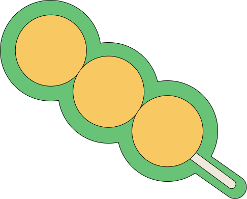

<!DOCTYPE html>
<html>
<head> 
  <meta charset="utf-8">
  <meta name="viewport" content="width=device-width, initial-scale=1">
  <!--  Your link to the stylesheet goes here -->
  <link rel="stylesheet" type="text/css" href="style.css">
  <title>afternoon tea: Curry Fishballs</title>
  <link rel="stylesheet" href="https://fonts.googleapis.com/css2?family=Patrick+Hand+SC&display=swap">
  <link rel="icon" type="image/png" href="favicon.png">
</head>

<body style="background-color:#FFFEF9;">
</body>

<div class="top-bar">
    <a href="https://charlotteip8.github.io/harmonic-collection/index.html">
        
    </a>
</div>

<div class="container4">
    <div class="left">
        <a href="https://charlotteip8.github.io/harmonic-collection/entry-7/index.html">
        
        </a>
    </div>
    <div class="right">
        <a href="https://charlotteip8.github.io/harmonic-collection/entry-9/index.html">
            
        </a>
    </div>
</div>

<div class="container">
    <div class="container1">
        <div class="box1">
            <h3 class="ingredients">ingredients</h3>
                <ul id="list1">
                    <li>500g fishballs (store-bought or homemade)</li> 
                    <li>1 tablespoon oil (for pan-frying)</li>
                    <li>2 tablespoons vegetable oil</li>
                    <li>2 garlic cloves, minced</li>
                    <li>1 small onion, finely chopped</li>
                    <li>1 tablespoon curry powder</li>
                    <li>1 teaspoon turmeric powder</li> 
                    <li>1-2 teaspoons sugar</li> 
                    <li>1 tablespoon soy sauce</li>
                    <li>1 tablespoon oyster sauce</li>
                    <li>1 cup chicken or vegetable stock</li>
                    <li>2 tablespoons coconut milk (optional, for creaminess)</li>
                </ul>
        </div>
    </div>

    <div class="container2">
        
        <p>Curry Fishballs</p>
        
    </div>

    <div class="container3">
        <div class="box2">
            <h3 class="instructions">instructions</h3>
            <ol id="list2">
                <li>Heat 1 tablespoon of oil in a pan over medium heat.</li>
                <li>Add the fishballs and lightly pan-fry them until slightly golden. Set aside.</li>
                <li>In the same pan or a clean wok, heat 2 tablespoons of oil over medium heat. </li>
                <li>Sauté garlic and onions until fragrant and softened.</li>
                <li>Stir in curry powder and turmeric, cooking for 1-2 minutes to release the spices' aroma.</li>
                <li>Mix in sugar, soy sauce, and oyster sauce. Stir well.</li>
                <li>Pour in chicken or vegetable stock, and bring the mixture to a simmer. Add coconut milk for a richer flavor.</li>
                <li>Add the pan-fried fishballs to the curry sauce. Simmer for 8-10 minutes, allowing the fishballs to absorb the sauce's flavors.</li>
                <li>If a thicker sauce is desired, stir in the cornstarch slurry and cook for another 1-2 minutes until the sauce thickens.</li>
                <li>Serve hot with skewers, rice, or noodles. Garnish with chopped spring onions or cilantro if desired.</li>
            </ol>
        </div>
    </div>

</div>

</html>